pkgs <- c("kaggler", "tidyverse", "httr", "readr", "here")
lapply(pkgs, require, character.only = TRUE)
#else install kaggler:
#install.packages(c("devtools"))
#devtools::install_github("ldurazo/kaggler")
filter <- dplyr::filter # to resolve namespace conflicts between tidyverse and dplyr
library(academictwitteR) # collecting Twitter data
library(dplyr) # Data Wrangling, pre-processing
library(quanteda) # text-based descriptive
library(quanteda.textstats)
library(quanteda.textplots)
library(tidytext) # Text Mining 'tidy format'
library(textclean) # Pre-Processing + harmonizing
library(lubridate) # Wrangling with time series data
library(ggplot2)
library(anytime) # parsing dates
library(scales)
library(caret)
theme_set(theme_light())2 Use case Twitter text mining
Required Rpackages
Descriptive Overview
For demonstration purposes we retrieve an archived Twitter (sub-)sample, containing English depression specific tweets. (The sample contains N = 20,000 tweets.) We retrieve a sub-sample from the platform Kaggle.
a.) This can be directly downloaded: Kaggle Data Dump, Depression”
b.) Or by issuing a GET request via its API (see below).
For obtaining the data via the Kaggle API we install and load all dependencies to use kaggler.
Note. For both (a & b authentication is required)
A kaggle.json file needs to be made for authentication on Kaggle. The kaggle.json file should be positioned within the working directory. The json contains: username and the API token.
To create your API token go to your Kaggle Profil: (Your profile > Account > Settings > API > Create new token)
response <- kgl_datasets_download_all(owner_dataset = "infamouscoder/mental-health-social-media?select=Mental-Health-Twitter")mental <- dataOr alternatively, read in csv-data which have been downloaded.
2.0.1 Overview of observations
Our data set comprises \(20,000\) observations with \(10,000\) depression labeled tweets. Yet, only \(19,881\) are unique tweets (i.e. post_id)
Each observed person user_id (\(N=72\) ) can be characterized by a set of variables (i.e., features) such as date of post creating post_created or count of followers.
glimpse(mental)Rows: 20,000
Columns: 11
$ ...1 <dbl> 0, 1, 2, 3, 4, 5, 6, 7, 8, 9, 10, 11, 12, 13,~
$ post_id <dbl> 6.378947e+17, 6.378904e+17, 6.377493e+17, 6.3~
$ post_created <chr> "Sun Aug 30 07:48:37 +0000 2015", "Sun Aug 30~
$ post_text <chr> "It's just over 2 years since I was diagnosed~
$ user_id <dbl> 1013187241, 1013187241, 1013187241, 101318724~
$ followers <dbl> 84, 84, 84, 84, 84, 84, 84, 84, 84, 84, 84, 8~
$ friends <dbl> 211, 211, 211, 211, 211, 211, 211, 211, 211, ~
$ favourites <dbl> 251, 251, 251, 251, 251, 251, 251, 251, 251, ~
$ statuses <dbl> 837, 837, 837, 837, 837, 837, 837, 837, 837, ~
$ retweets <dbl> 0, 1, 0, 2, 1, 1, 1, 0, 0, 41, 1, 0, 0, 0, 0,~
$ label <dbl> 1, 1, 1, 1, 1, 1, 1, 1, 1, 1, 1, 1, 1, 1, 1, ~# A tibble: 1 x 1
n
<int>
1 10000n_distinct(mental$post_id) # count of unique tweets[1] 19881n_distinct(mental$user_id) # count of unique users[1] 72Parse Date Variable post_created
# Remove the timezone offset from the date string
mental$date <- gsub(" \\+\\d{4}", "", mental$post_created)# Convert the date string to a date variable
mental$date_any <- anytime(mental$date)
# Format the date variable as "YYYY-MM-DD H:M"
#mental$formatted_date <- format(mental$date_any , "%Y-%m-%d %H:%M")
mental$formatted_date <- format(mental$date_any , "%Y-%m-%d")
mental$day_hour <- format(mental$date_any, "%Y-%m-%d %H")Formatted_date is a character class. When we would use as.Date() we would lose the timestamp information. When we have a character with both date and time we have to use POSIXct class (as seen with the date_any variable).
mental$date <- as.Date(mental$formatted_date)
mental$date_hour <- as.POSIXlt(mental$day_hour)
#mental$formatted_date_time <- as.POSIXlt(mental$formatted_date)
mental %>%
# calculate how many tweets posted on each date
count(date) %>%
# plot the result
ggplot(aes(x = date, y = n)) +
geom_line() +
theme_bw() +
scale_x_date(date_breaks = "7 day", date_labels = "%b %d") +
ylab("Number of Tweets\n") + xlab("\nDate")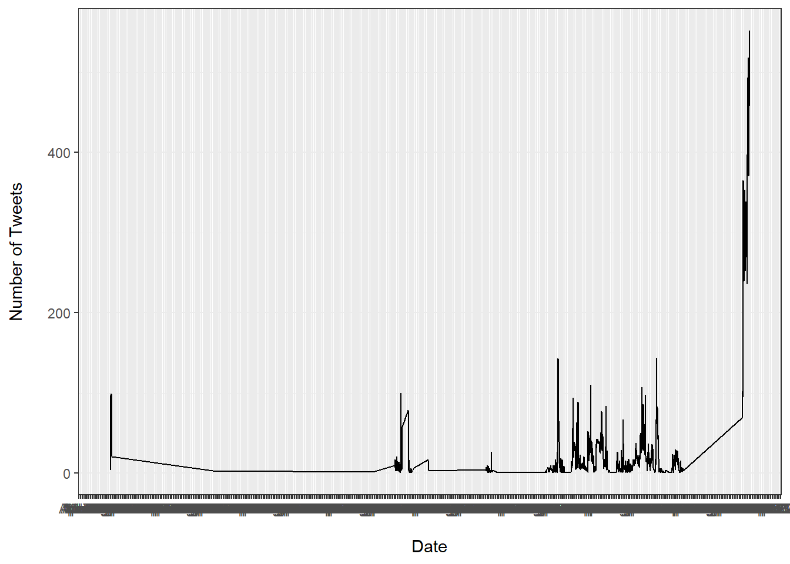
Distribution Friends
mental$logfriends <-log(mental$friends+1)
hist(mental$logfriends, breaks = 50, prob= TRUE)
lines(density(mental$logfriends), col = "red") 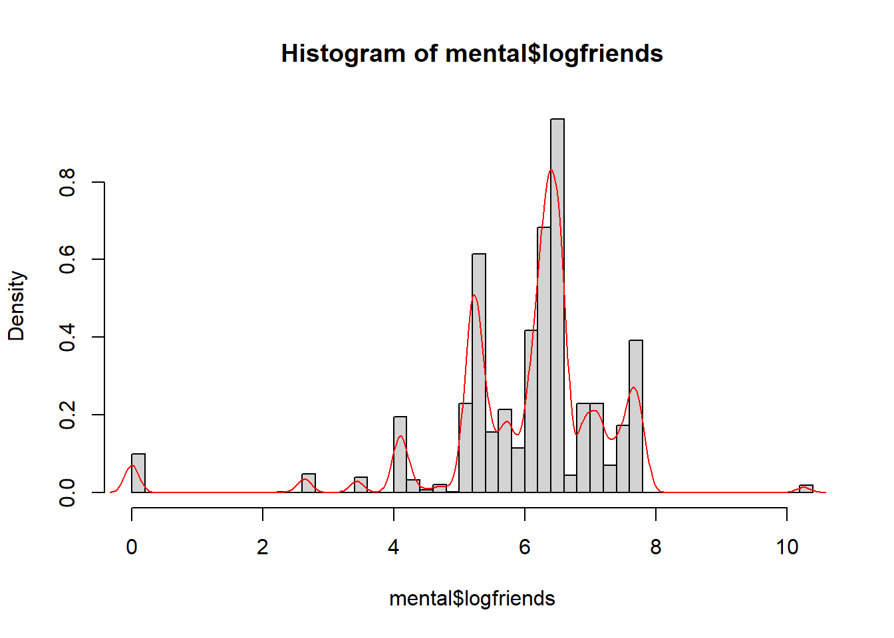
Distribution Followers
mental$logfollow=log(mental$followers+1)
hist(mental$logfollow, breaks = 50, prob = TRUE)
lines(density(mental$logfollow), col = "red") 
ggplot(mental, aes(x = logfriends, y = logfollow)) +
geom_point(alpha=.5)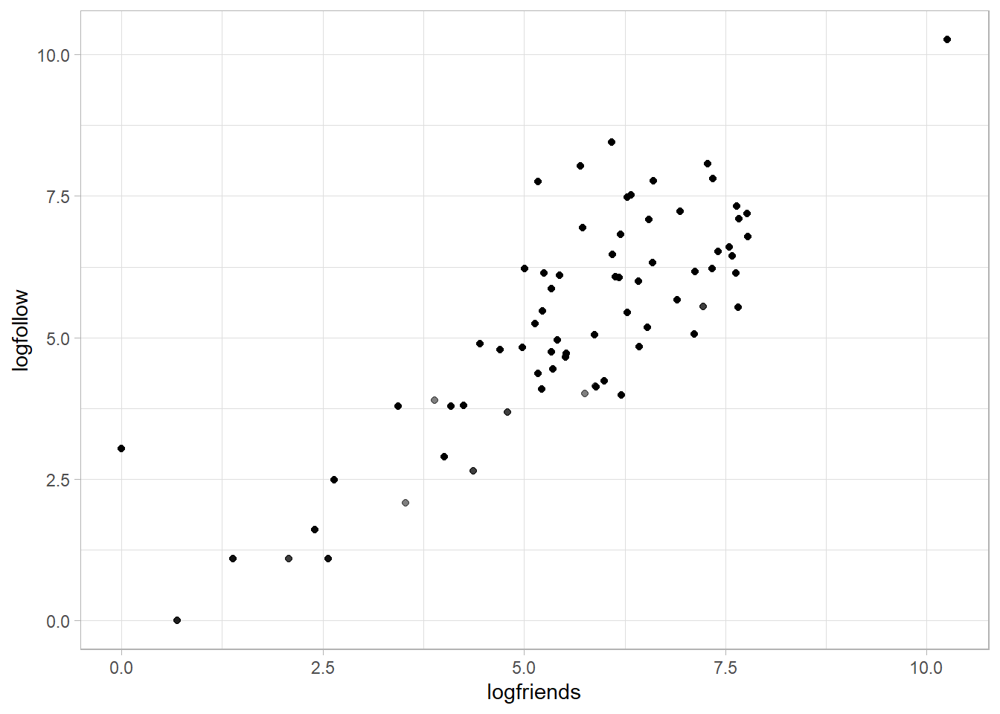
Tweets und Retweets per day
twt_retwt_summary <- mental %>%
group_by(user_id, date, label) %>%
summarize(tweets = n(),
avg_retweets = exp(mean(log(retweets + 1))) - 1)
startTime <- as.Date("2014-01-01")
endTime <- as.Date("2017-10-31")
# create a start and end time R object
start.end <- c(startTime,endTime)
start.end[1] "2014-01-01" "2017-10-31"pl1 <- twt_retwt_summary %>%
ggplot(aes(date, tweets, group = user_id, fill= user_id)) +
geom_line( size = 0.4) +
expand_limits(y = 0) +
labs(x = "Time",
y = "Number of depression tweets per day") +
(scale_x_date(limits=start.end,
breaks=date_breaks("3 month"),
labels=date_format("%b %y")))
twt_retwt_summary %>%
ggplot(aes(date, tweets, group = user_id, fill= label, col= label)) +
geom_line( size = 0.4) +
expand_limits(y = 0) +
labs(x = "Time",
y = "Number of depression tweets per day") +
(scale_x_date(limits=start.end,
breaks=date_breaks("3 month"),
labels=date_format("%b %y")))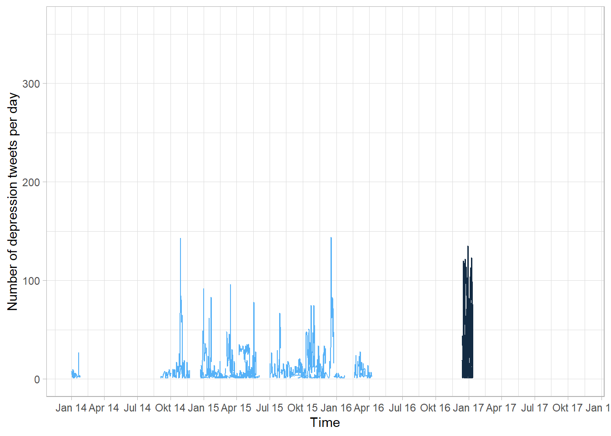
twt_retwt_summary %>%
ggplot(aes(date, avg_retweets, group = user_id, fill= label, col= label)) +
geom_line( size = 0.4) +
expand_limits(y = 0) +
labs(x = "Time",
y = "Number of depression tweets per day") +
(scale_x_date(limits=start.end,
breaks=date_breaks("3 month"),
labels=date_format("%b %y")))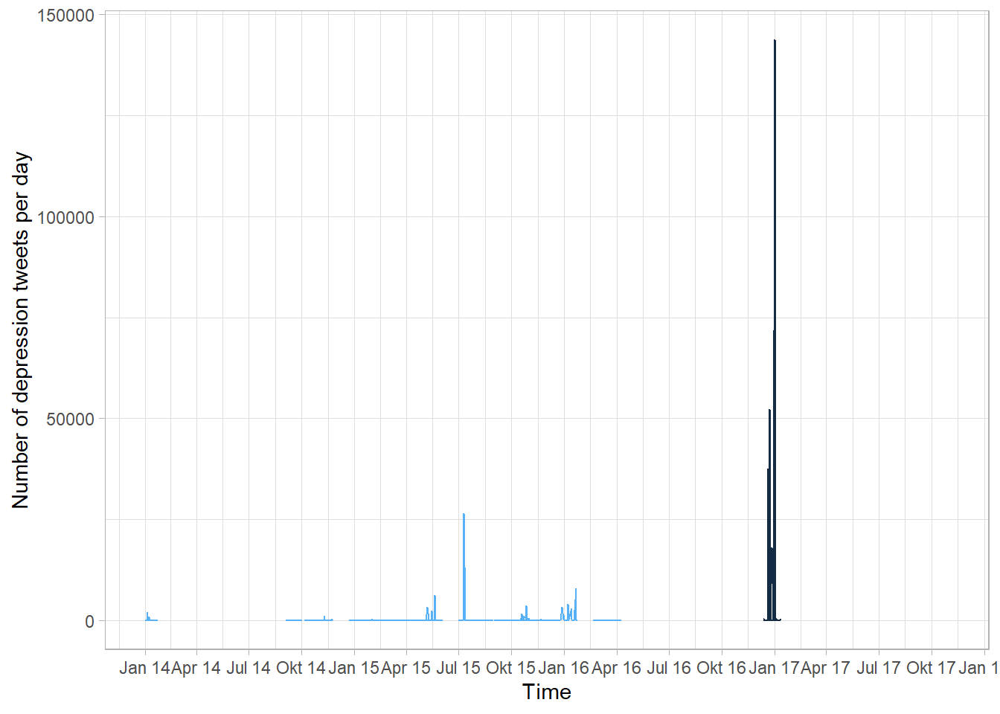
pl2 <-twt_retwt_summary %>%
ggplot(aes(date, avg_retweets, group=user_id)) +
geom_line( size = 0.4) +
expand_limits(y = 0) +
labs(x = "Time",
y = "Average (geometric mean) retweets each day")+
(scale_x_date(limits=start.end,
breaks=date_breaks("3 month"),
labels=date_format("%b %y")))
gridExtra::grid.arrange(pl1,pl2, ncol=2)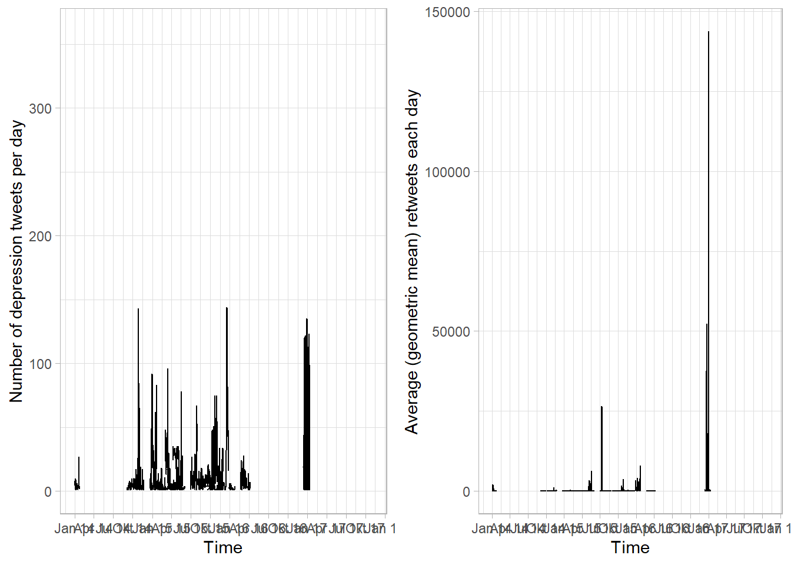
User Activity
mental %>%
count(user_id, sort = TRUE) %>%
head(12) %>%
mutate(username = reorder(user_id, n)) %>%
ggplot(aes(username, n)) +
geom_col() +
coord_flip()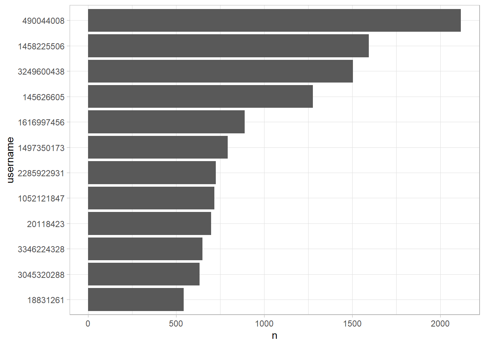
#Retweet activity per user
mental %>%
arrange(desc(retweets)) %>%
select(user_id, post_text, retweets)# A tibble: 20,000 x 3
user_id post_text retweets
<dbl> <chr> <dbl>
1 490044008 RT @omgAdamSaleh: We got kicked out of a @De~ 839540
2 3249600438 RT @POTUS: Thank you for everything. My last~ 822450
3 1497350173 RT @POTUS: Thank you for everything. My last~ 820245
4 1306425758 RT @Louis_Tomlinson: Our fans support really~ 402946
5 1497350173 RT @HamillHimself: no words #Devastated http~ 358548
6 3249600438 RT @HamillHimself: no words #Devastated http~ 358536
7 171999132 RT @HamillHimself: no words #Devastated http~ 358510
8 1306425758 RT @Louis_Tomlinson: @NaughtyBoyMusic Jesus ~ 341695
9 1306425758 RT @Louis_Tomlinson: @NaughtyBoyMusic good f~ 306473
10 490044008 RT @edsheeran: Hello 2017... https://t.co/1U~ 273872
# i 19,990 more rows#Tweets und Retweets per User
mental %>%
group_by(user_id) %>%
summarize(tweets = n(),
retweetnr = sum(retweets)) %>%
arrange(desc(tweets)) %>%
arrange(desc(retweetnr))# A tibble: 72 x 3
user_id tweets retweetnr
<dbl> <int> <dbl>
1 1497350173 792 7004039
2 490044008 2117 5379581
3 1306425758 306 4810463
4 3045320288 633 4402064
5 3249600438 1504 4131286
6 324294391 215 765268
7 171999132 121 463537
8 18831261 543 317468
9 49548465 352 197019
10 1015648590 84 175150
# i 62 more rows#Proportion Likes and Retweets per User
mental %>%
select(user_id, post_text, retweets, favourites) %>%
mutate(ratio = (favourites + 1) / (retweets + 1)) %>% # to avoid zero
arrange(desc(ratio))# A tibble: 20,000 x 5
user_id post_text retweets favourites ratio
<dbl> <chr> <dbl> <dbl> <dbl>
1 2660477449 "@BenBuckwalter i was diagn~ 0 39008 39009
2 2660477449 "@JordanSweeto i hope whate~ 0 39008 39009
3 2660477449 "@BenBuckwalter i would!" 0 39008 39009
4 2660477449 "@BenBuckwalter i feel like~ 0 39008 39009
5 2660477449 "@BryanStars I love you, y~ 0 39008 39009
6 2660477449 "@BenBuckwalter me! I volun~ 0 39008 39009
7 2660477449 "I'm getting tired of your ~ 0 39008 39009
8 2660477449 "@deefizzy you're amazing. ~ 0 39008 39009
9 2660477449 "@BenBuckwalter people tend~ 0 39008 39009
10 2660477449 "@BenBuckwalter being notic~ 0 39008 39009
# i 19,990 more rows8. Basics Text Mining in a Nutshell
A.Document = collection of strings and their metadata
B.Corpus = collection of *documents**.
C.Tokens = smallest unit of meaning (mostly words)
D.Vocabulary = collection of unique words of a Corpus.
E.Document-Feature-Matrix or Document-Term-Matrix =
this is a matrix where the rows indicate the documents, the columns indicate the expressions and the cells indicate the frequency of the expressions in each document, i.e.: Matrix with n = number of Document rows and m = size of Vocabulary columns, based on bag-of-words assumption, which ignores word order and syntax.
8.1. Pre-processing
A. Tokenisation
B. Remove Stopwords
C. String operations (punctuation, normalise URL).
The order of the application steps is crucial and should be guided by the research question.
# Clean @-Symbol
mental$post_text<- gsub("@\\w+", "", mental$post_text)
# Clean Interpunction
mental$post_text<- gsub("[[:punct:]]", "", mental$post_text)
# Clean Numbers
mental$post_text <- gsub("[[:digit:]]", "", mental$post_text)
# Clean pictures
mental$post_text<- gsub("pictwitter\\w+ *", "", mental$post_text)#Clean HTML-Notation
remove_html <- "&|<|>" #< und > stehen für < und > und & für & &
mental_en <- mental %>%
select(post_id, post_text, user_id) %>%
mutate(text = stringr::str_remove_all(post_text, remove_html))With textclean further harmonisation can be done, e.g. replacing emojis with word equivalents.
mental_en$text <- replace_emoji(mental_en$text)Or normalizing colloquial expressions such as word elongations (e.g., “Whyyyy”)
mental_en$text <- replace_word_elongation(mental_en$text)From the data frame, you can create a Corpus object, i.e. a collection of documents (tweets) and their metadata.
tweets_en_corpus <- corpus(unique,
docid_field = "post_id",
text_field = "post_text")In quanteda the smallest meaningful unit are tokens which can be generated by segmenting into words (see tidytext unnest_tokens(word, text). Further, we can remove stopwords (hedges, grammatical signifiers which bear little semantic meaning). See (stopwords())
tweets_en_tokens <- tokens(tweets_en_corpus,
remove_punct = TRUE,
remove_numbers = TRUE,
remove_symbols = TRUE,
remove_url = TRUE) %>%
tokens_tolower() %>%
tokens_remove(stopwords("english"))8.2. Tidy Workflow–Exploration Tweets, Retweets and Hashtags
#Tokenising Tweets (1-gram) and Pre-processing with tidytext
tweet_words <- mental %>%
select(user_id,
post_text,
retweets,
favourites,
formatted_date,
post_id) %>%
unnest_tokens(word, post_text) %>%
anti_join(stop_words, by = "word") %>%
filter(!word %in% c("amp", "de", "twitter", "youre", "en", "die", "rt", "im", "dont", "ive", "yong"),
stringr::str_detect(word, "[a-z]"))
tweet_words %>%
count(word, sort = TRUE) %>%
head(16) %>%
mutate(word = reorder(word, n)) %>%
ggplot2::ggplot(aes(word, n)) +
geom_col() +
coord_flip() +
labs(title = "Most common words in Tweets on Depression",
y = "Frequency of words")
#Distribution of Favorites
mental %>%
ggplot2::ggplot(aes(favourites + 1)) +
geom_histogram() +
scale_x_log10()
#Tf-idf: signals importance of a word in a corpus selection
top_word <- tweet_words %>%
count(word, formatted_date) %>%
bind_tf_idf(word, formatted_date, n) %>%
arrange(desc(tf_idf)) %>%
distinct(formatted_date, .keep_all = TRUE) %>%
arrange(formatted_date)
tf_idf <- word_summary %>%
inner_join(top_word, by = c("word")) %>%
arrange(desc(avg_retweets))
#Tf-idf of words per hour
tf_idf %>%
ggplot2::ggplot(aes(tf_idf, forcats::fct_reorder(word, tf_idf), fill = word)) +
geom_col(show.legend = FALSE)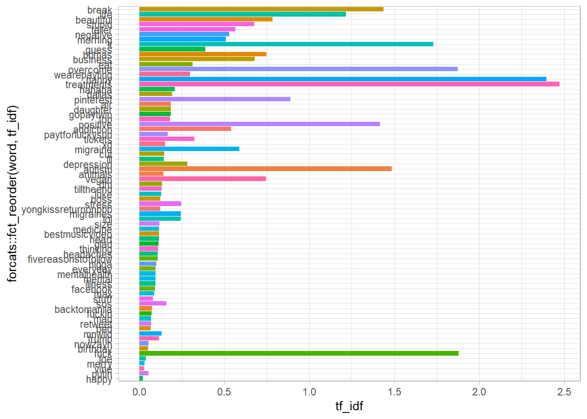
#Hashtag exploration
tweet_words <- mental %>%
mutate(hashtags = stringr::str_count(post_text, "#[a-zA-Z]"), sort = TRUE) %>%
select(user_id, post_text, retweets, favourites, formatted_date , post_id,
hashtags) %>%
unnest_tokens(word, post_text) %>%
anti_join(stop_words, by = "word") %>%
filter(!word %in% c("de", "|"),
stringr::str_detect(word, "[a-z]"))
mental %>%
mutate(hashtags = stringr::str_count(post_text, "#[a-zA-Z]"), sort = TRUE) %>%
filter(hashtags < 6) %>%
group_by(user_id) %>%
summarize(tweets = n(),
avg_retweets = exp(mean(log(retweets + 1))) - 1) %>%
filter(tweets >= 30) %>%
arrange(desc(avg_retweets))# A tibble: 55 x 3
user_id tweets avg_retweets
<dbl> <int> <dbl>
1 3.05e 9 633 229.
2 1.50e 9 792 74.8
3 7.40e 7 50 72.4
4 1.31e 9 306 59.8
5 1.72e 8 121 11.2
6 3.09e 7 142 11.1
7 3.25e 9 1504 6.85
8 7.63e17 522 6.79
9 6.32e 8 144 5.09
10 4.95e 7 352 4.26
# i 45 more rowstweet_word_summary <- tweet_words %>%
filter(hashtags < 6) %>%
group_by(word) %>%
summarize(n = n(),
avg_retweets = exp(mean(log(retweets+ 1))) - 1,
avg_favorites = exp(mean(log(favourites + 1))) - 1)
tweet_word_summary <-tweet_word_summary %>%
filter(n >= 100,
!stringr::str_detect(word, "https")) %>%
filter(!word %in% c("amp", "de", "twitter", "youre", "en", "die", "rt", "im", "dont", "ive", "yong"),
stringr::str_detect(word, "[a-z]")) %>%
arrange(desc(avg_retweets)) %>%
head()
tweet_word_summary %>%
filter(n >= 100,
!stringr::str_detect(word, "https")) %>%
ggplot2::ggplot(aes(n, avg_retweets)) +
geom_point() +
geom_text(aes(label = word), check_overlap = TRUE) +
scale_x_log10() +
scale_y_log10()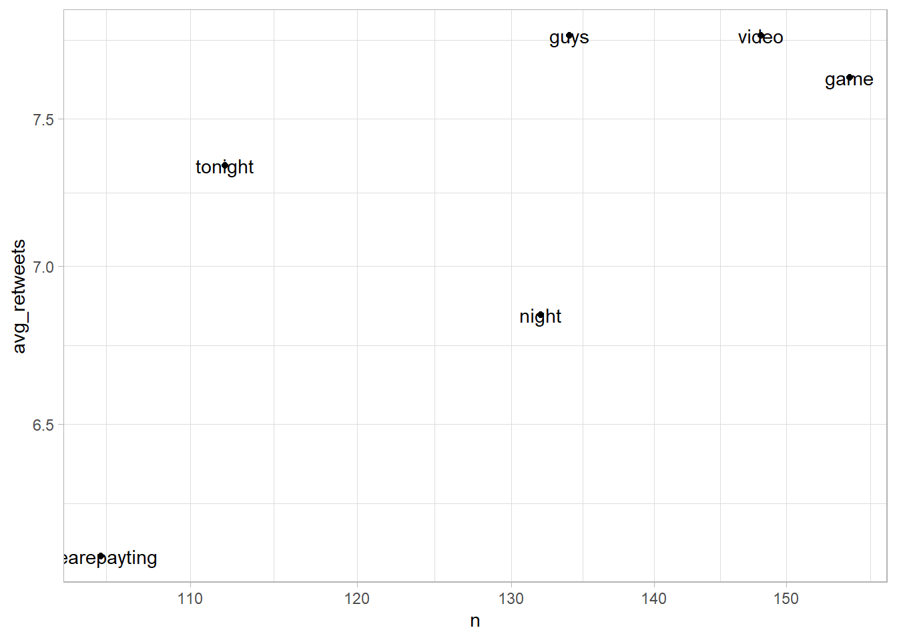
tweet_word_summary %>%
filter(n >= 100,
!stringr::str_detect(word, "https")) %>%
arrange(desc(avg_retweets)) %>%
head(20) %>%
mutate(word = reorder(word, avg_retweets)) %>%
ggplot2::ggplot(aes(word, avg_retweets)) +
geom_col() +
coord_flip() +
labs(title = "Which words get the most retweets in depression?",
subtitle = "Only words appearing in at least 100 tweets",
y = "Geometric mean of the Number of retweets")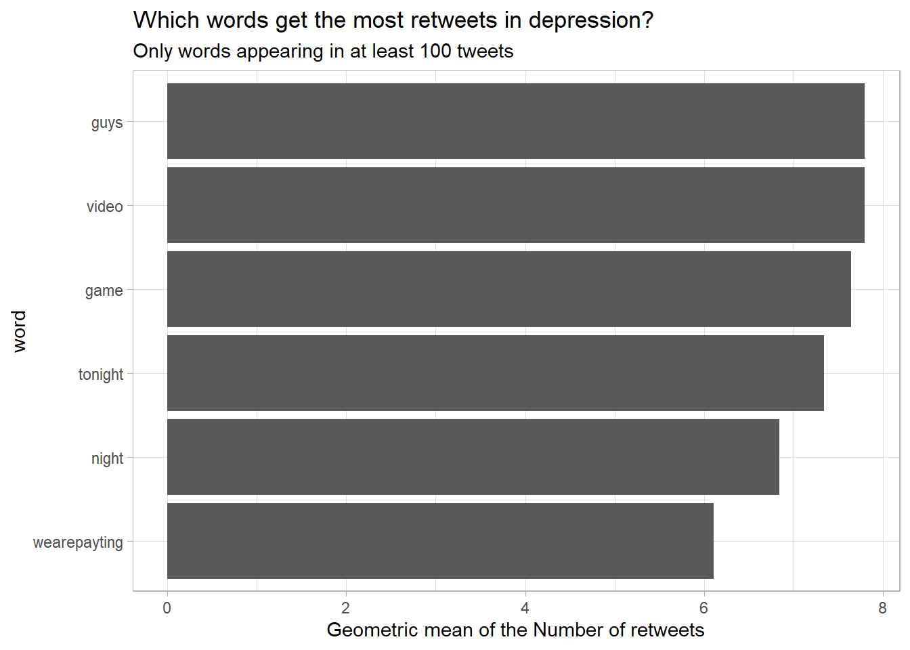
3 Predicting depression tweets based on followers and friends
# Data preprocessing
# Check for missing values
missing_values <- sum(is.na(mental))
if (missing_values > 0) {
data <- na.omit(mental) # Remove rows with missing values
}
# Convert label variable to factor
#mental$label <- as.factor(mental$label)
# Standardize the followers and friends variables
mental$followers_standardized <- as.numeric(scale(mental$followers))
mental$friends_standardized <- as.numeric(scale(mental$friends))
# Check the standardized variables
head(mental[, c("followers", "followers_standardized", "friends", "friends_standardized")])# A tibble: 6 x 4
followers followers_standardized friends friends_standardized
<dbl> <dbl> <dbl> <dbl>
1 84 -0.430 211 -0.311
2 84 -0.430 211 -0.311
3 84 -0.430 211 -0.311
4 84 -0.430 211 -0.311
5 84 -0.430 211 -0.311
6 84 -0.430 211 -0.311# Select variables for analysis
selected_vars <- c("label", "followers_standardized", "friends_standardized")
mental_selected <- mental[selected_vars]
# Split the dataset into training and testing sets
set.seed(123) # Set a seed for reproducibility
train_indices <- createDataPartition(mental_selected$label, p = 0.8, list = FALSE)
train_data <- mental_selected[train_indices, ]
test_data <- mental_selected[-train_indices, ]
train_data$label <- as.numeric(train_data$label)
test_data$label <- as.numeric(test_data$label)
# Linear Regression model
model <- lm(label ~ followers_standardized + friends_standardized, data = train_data)
# Model evaluation
predictions <- predict(model, newdata = test_data)
evaluation <- data.frame(actual = test_data$label, predicted = predictions)
# Calculate evaluation metrics
rmse <- mean((evaluation$actual - evaluation$predicted)^2)
rmse <- sqrt(rmse)
r_squared <- cor(evaluation$actual, evaluation$predicted)^2
# Print evaluation metrics
cat("Mean Squared Error (MSE):", rmse, "\n")Mean Squared Error (MSE): 0.4776674 cat("Root Mean Squared Error (RMSE):", rmse, "\n")Root Mean Squared Error (RMSE): 0.4776674 cat("R-squared value:", r_squared, "\n")R-squared value: 0.08754619 # Regression coefficients and p-values
summary(model)
Call:
lm(formula = label ~ followers_standardized + friends_standardized,
data = train_data)
Residuals:
Min 1Q Median 3Q Max
-0.8265 -0.4814 -0.0809 0.4749 1.1280
Coefficients:
Estimate Std. Error t value Pr(>|t|)
(Intercept) 0.499941 0.003789 131.94 <2e-16 ***
followers_standardized -0.286159 0.008359 -34.23 <2e-16 ***
friends_standardized 0.314163 0.008355 37.60 <2e-16 ***
---
Signif. codes: 0 '***' 0.001 '**' 0.01 '*' 0.05 '.' 0.1 ' ' 1
Residual standard error: 0.4793 on 15997 degrees of freedom
Multiple R-squared: 0.08129, Adjusted R-squared: 0.08117
F-statistic: 707.7 on 2 and 15997 DF, p-value: < 2.2e-16library(dotwhisker)
dwplot(model)+
xlab("Coefficient Estimate") + ylab("") +
geom_vline(xintercept = 0,
colour = "grey60",
linetype = 2) +
ggtitle("Predicting Depression Tweets") 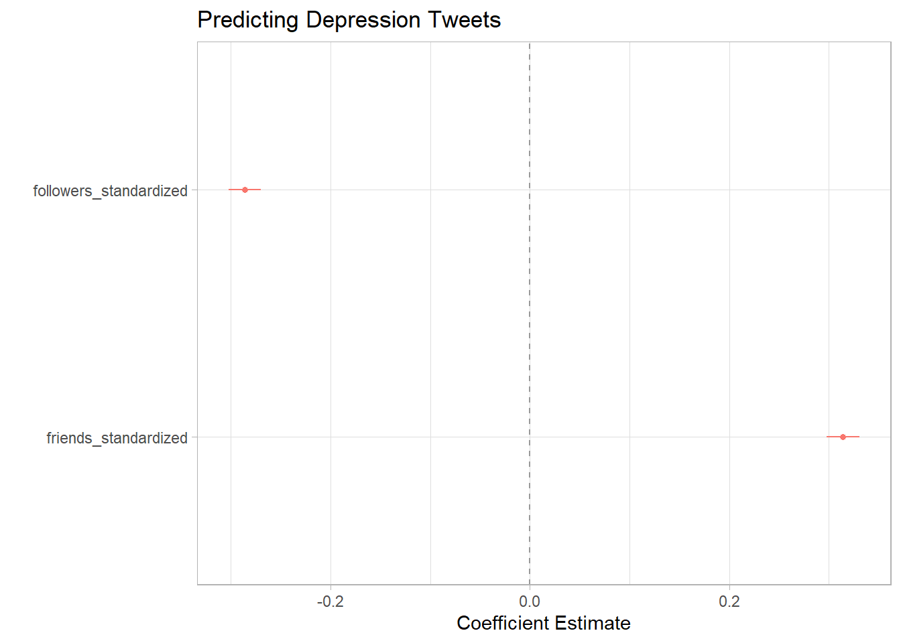
The followers_standardized coefficient (-0.286159) indicates that, on average, a one-standard-deviation increase in the standardized followers variable is associated with a decrease of 0.286159 units in the predicted depression label. The friends_standardized coefficient (0.314163) indicates that, on average, a one-standard-deviation increase in the standardized friends variable is associated with an increase of 0.314163 units in the predicted depression label. All t-values are large (absolute values > 2), indicating that the coefficients are significantly different from zero.
Overall, the regression analysis suggests that both the standardized followers and standardized friends variables have a statistically significant association with the predicted depression label. An increase in the standardized followers is associated with a decrease in the predicted depression label, while an increase in the standardized friends is associated with an increase in the predicted depression label.
# Fit a non-linear regression model
model_nonlinear <- nls(label ~ a * exp(b * followers_standardized) + c * friends_standardized,
data = train_data,
start = list(a = 1, b = 1, c = 1))
# Print the model summary
summary(model_nonlinear)
Formula: label ~ a * exp(b * followers_standardized) + c * friends_standardized
Parameters:
Estimate Std. Error t value Pr(>|t|)
a 0.478974 0.004230 113.23 <2e-16 ***
b -0.510885 0.024174 -21.13 <2e-16 ***
c 0.095444 0.003802 25.11 <2e-16 ***
---
Signif. codes: 0 '***' 0.001 '**' 0.01 '*' 0.05 '.' 0.1 ' ' 1
Residual standard error: 0.4864 on 15997 degrees of freedom
Number of iterations to convergence: 17
Achieved convergence tolerance: 3.114e-07# Predict the label using the non-linear regression model
test_data$predicted_nonlinear <- predict(model_nonlinear, newdata = test_data)
# Evaluate the non-linear regression model
mse_nonlinear <- mean((test_data$label - test_data$predicted_nonlinear)^2)
rmse_nonlinear <- sqrt(mse_nonlinear)
r_squared_nonlinear <- 1 - sum((test_data$label - test_data$predicted_nonlinear)^2) / sum((test_data$label - mean(test_data$label))^2)
# Print evaluation metrics
cat("Mean Squared Error (MSE) - Nonlinear Regression:", mse_nonlinear, "\n")Mean Squared Error (MSE) - Nonlinear Regression: 0.2366316 cat("Root Mean Squared Error (RMSE) - Nonlinear Regression:", rmse_nonlinear, "\n")Root Mean Squared Error (RMSE) - Nonlinear Regression: 0.4864479 cat("R-squared value - Nonlinear Regression:", r_squared_nonlinear, "\n")R-squared value - Nonlinear Regression: 0.05347357 dwplot(model_nonlinear)+
xlab("Coefficient Estimate") + ylab("") +
geom_vline(xintercept = 0,
colour = "grey60",
linetype = 2) +
ggtitle("Predicting Depression Tweets with a non-linear model") 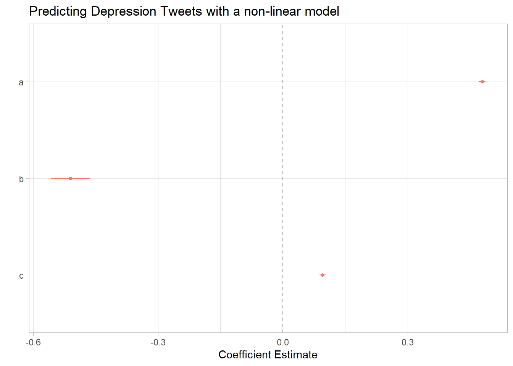
library(gam)Warning: Paket 'gam' wurde unter R Version 4.1.3 erstelltLade nötiges Paket: splinesLade nötiges Paket: foreach
Attache Paket: 'foreach'Die folgenden Objekte sind maskiert von 'package:purrr':
accumulate, whenLoaded gam 1.22library(mgcv)Warning: Paket 'mgcv' wurde unter R Version 4.1.3 erstelltLade nötiges Paket: nlmeWarning: Paket 'nlme' wurde unter R Version 4.1.3 erstellt
Attache Paket: 'nlme'Das folgende Objekt ist maskiert 'package:dplyr':
collapseThis is mgcv 1.8-41. For overview type 'help("mgcv-package")'.
Attache Paket: 'mgcv'Die folgenden Objekte sind maskiert von 'package:gam':
gam, gam.control, gam.fit, s# Fit a non-linear regression model using GAM
model_gam <- gam(label ~ s(followers_standardized) + s(friends_standardized), data = train_data)
# Preprocess data by removing missing values
complete_data <- train_data[complete.cases(train_data), ]
# Visualize the estimated effects of the variables
par(mfrow = c(1, 2)) # Adjust the layout of the plots if desired
# Plot the estimated effect of 'followers'
plot(model_gam, select = 1, se=TRUE, residuals = TRUE,
xlab = "Followers", ylab = "Effect of Followers on Label")
# Plot the estimated effect of 'friends'
plot(model_gam, select = 2, se=TRUE, residuals = TRUE,
xlab = "Friends", ylab = "Effect of Friends on Label")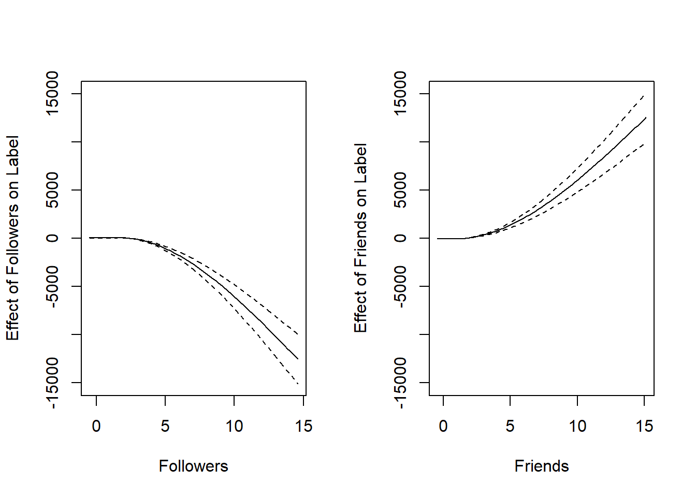
Warning: Paket 'gratia' wurde unter R Version 4.1.3 erstellt# plot all smooths
draw(model_gam)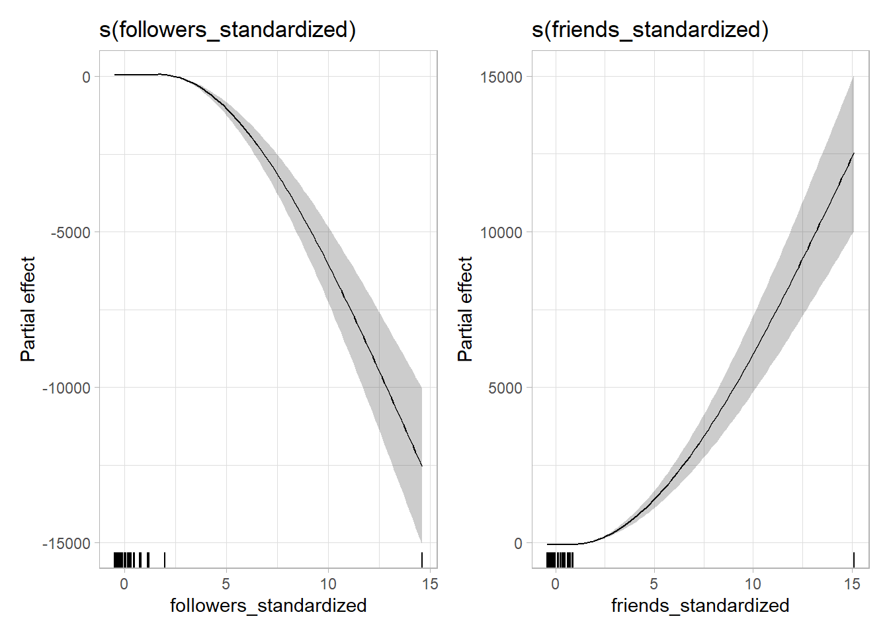
Adding partial residuals to the plot of the estimated effects in a GAM model provides a way to assess the goodness of fit and the presence of systematic patterns in the model.
Partial residuals are calculated by subtracting the estimated component of the model (excluding the effect of a specific variable of interest) from the observed response variable. These residuals represent the part of the response variable that is not accounted for by the model for a specific variable.
When partial residuals are added to the plot of the estimated effects, they are typically shown as individual points or a smooth line against the corresponding variable. This allows you to visually inspect the relationship between the variable and the unexplained variation in the response variable, which can help identify any remaining patterns or trends not captured by the model.
By examining the distribution and pattern of the partial residuals, you can assess whether the model captures the underlying structure and if there are any systematic deviations from the model’s predictions. Systematic patterns in the partial residuals may indicate that the model is misspecified or that there are additional variables or nonlinear relationships that should be considered.
draw(model_gam, residuals = TRUE)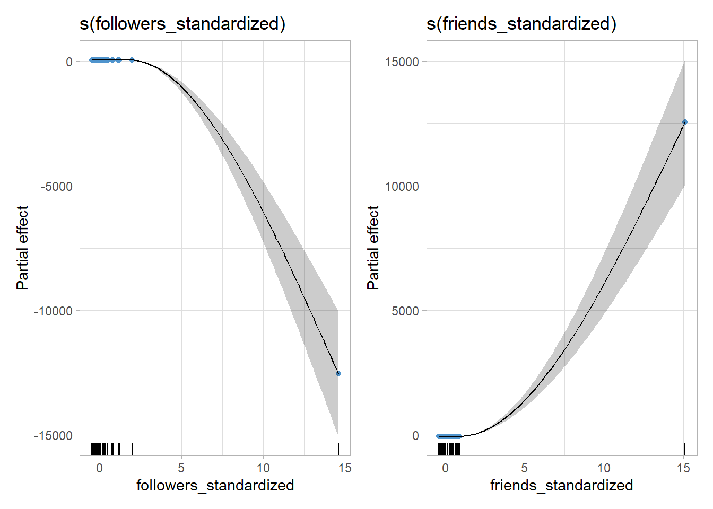